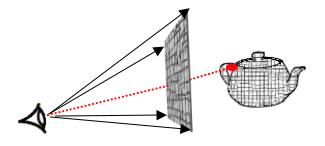
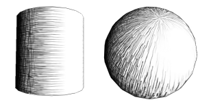
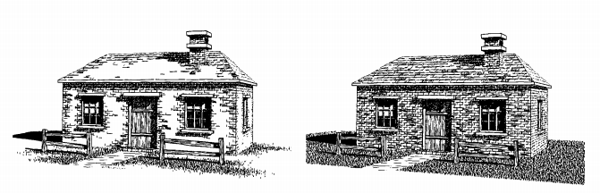
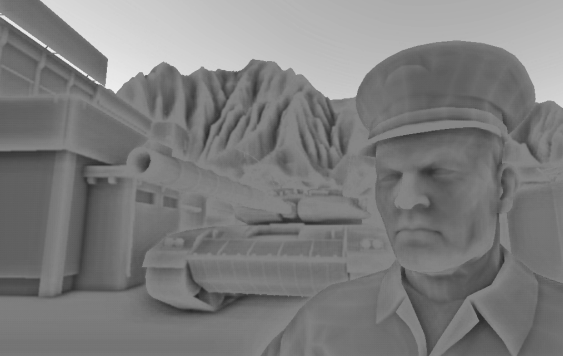
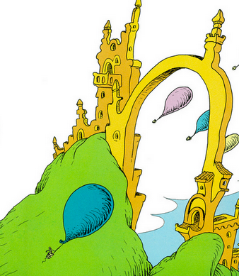

My goal with this project was two-fold:
Such an renderer could be used in games to create a distinctive art style, CAD to mimic technical illustration, architectural renders to give a sense of space without requiring realistic texturing, etc.
Hatching is a technique artists use to provide detail and shading to images without using textures, gradients, or solid colors.
One of the first attempts to render a 3D scene in realtime with hatching was Stylized rendering techniques for scalable real-time 3D animation [Lake et al. 2000]. This technique draws hatching in image-space, which results in a 'shower-door effect': even as objects move around, the hatching stays in the same place as though it were embedded in stationary glass pane in between the viewer and the objects.

Figure 1: Image-space rendering of hatching [Lake et al. 2000].
In Real-time hatching [Praun et al. 2000], this problem is sovled by rendering hatching in object-space by rendering hatch textures via texture mapping. This method was expanded in Fine tone control in hardware hatching [Webb et al. 2002].

Figure 2: Object-space rendering of hatching [Praun et al. 2000].
A large problem with hatching, however, is that it often overwhelms the user with detail. Artists often use a technique called 'indication' to draw hatching or detail sparingly. In Computer-generated pen-and-ink illustration [Winkenbach et al. 1994], an offline method for rendering a scene with indication is provided.

Figure 3: The image on the left utilizes indication to avoid overwhelming the viewer with detail.
Because hatching is best used to exemplify detail, I decided to also investigate how lighting deals with detail.
Ambient occlusion is a lighting technique which calculates how much ambient light can reach any point in a 3D scene. Areas where ambient light is occluded are darkened. Recently, an algorithm for approximating ambient occlusion in screen space (SSAO) has become incredibly popular in realtime rendering [Mittring 2007].

Figure 4: Screen-space ambient occlusion.
In Dr. Seuss's illustrations, he often uses hatching to show contours and detail rather than actual realistic lighting. Inspired by this, I wanted to render detail, rather than general shading, using hatching, thus avoiding overwhelming the viewer with detail. The initial idea was to render screen-space ambient occlusion with realtime hatching.

Figure 5: Dr. Seuss's "The Places You'll Go"